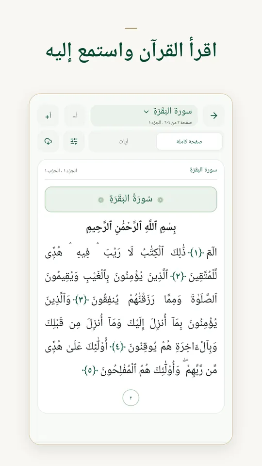
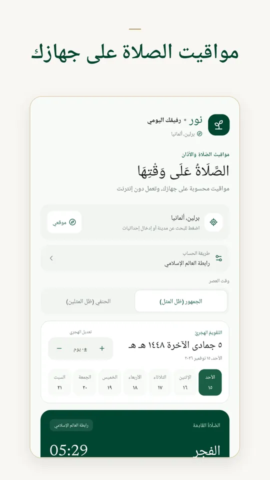
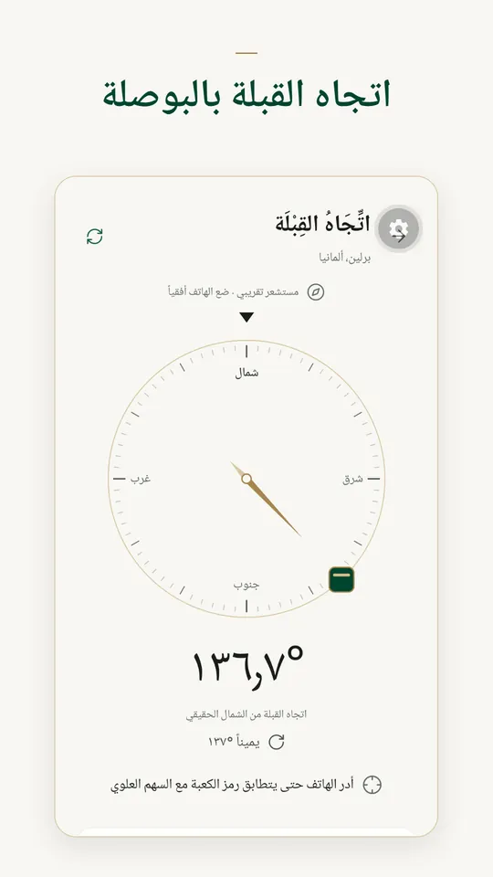
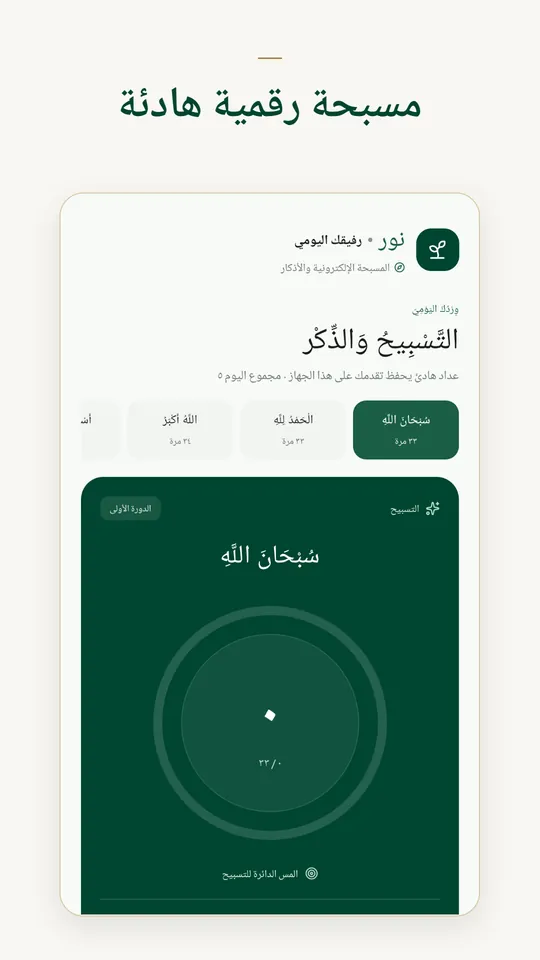
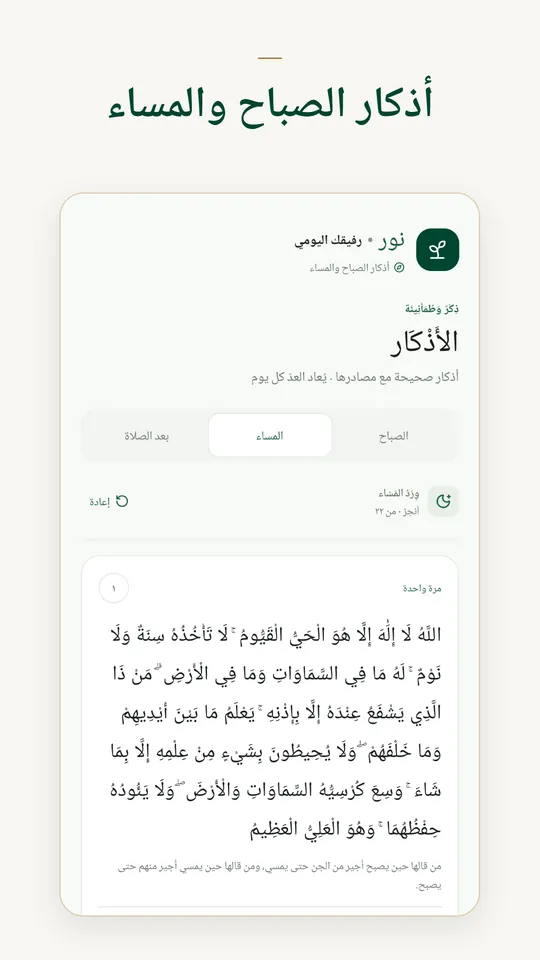
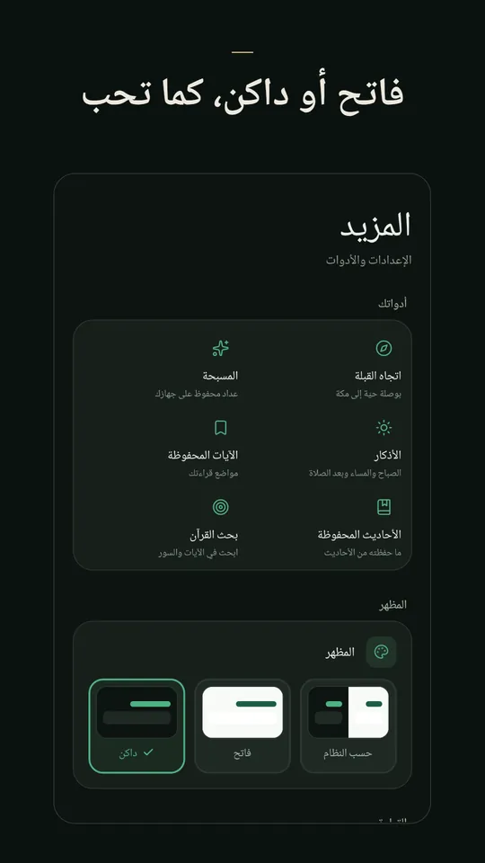

رفيق إسلامي هادئ
القرآن والمواقيت والأذكار، بهدوء.
رفيق إسلامي هادئ وبلا إعلانات. اقرأ القرآن واستمع إليه، وتعرّف على مواقيت الصلاة واتجاه القبلة، وحافظ على أذكارك. بلا حساب، وبياناتك تبقى على جهازك.
سيتوفر التطبيق قريباً على المتجرين.

ما في نور
كل ما تحتاجه في يومك، في تطبيق واحد بلا ازدحام.
القرآن الكريم
اقرأ النص العثماني للسور الـ114 مع ترجمة إنجليزية اختيارية، وابحث في الآيات، واستمع إلى التلاوة آية بآية بصوت القارئ الذي تختار. نزِّل ما تريد للاستماع دون اتصال.
مواقيت الصلاة
مواقيت تُحسب على جهازك بحسب موقعك أو مدينة تختارها، مع اختيار طريقة الحساب ومذهب العصر، وتنبيهات اختيارية لكل صلاة.
بوصلة القبلة
بوصلة تشير إلى اتجاه القبلة باستخدام موقعك ومستشعرات هاتفك.
الحديث
الأربعون النووية مع شرحها، إضافةً إلى صحيحي البخاري ومسلم. احفظ الأحاديث لتعود إليها.
الأذكار والمسبحة
أذكار الصباح والمساء وبعد الصلاة مع مصادرها، ومسبحة رقمية تنتقل تلقائياً إلى الذكر التالي.
صُمِّم ليكون هادئاً
مظهر فاتح أو داكن، وواجهة عربية من اليمين إلى اليسار، واختيار بين الأرقام العربية والغربية. العلامات المرجعية وموضع القراءة محفوظان على جهازك.
نظرة على التطبيق





الخصوصية أولاً
لا حساب، ولا إعلانات، ولا تتبّع. بياناتك تبقى على جهازك.
بلا حساب
لا تسجيل دخول ولا بريد إلكتروني. افتح التطبيق واستخدمه.
بلا إعلانات ولا تتبّع
لا أدوات تحليلات ولا إعلانات ولا خادم خاص بالتطبيق.
الموقع على جهازك
يُستخدم موقعك لحساب المواقيت والقبلة على جهازك فقط، ويمكنك بدلاً منه اختيار مدينة.
إشعارات محلية
تذكيرات الصلاة تُجدول على جهازك ولا يوجد خادم إشعارات.
تنبيه
قد تختلف مواقيت الصلاة دقائق عن جدول مسجدك المحلي، فيُرجى التأكد منه. ودقة بوصلة القبلة تعتمد على معايرة مستشعر هاتفك. ويُرجى التحقق من الأحكام ودرجات الأحاديث مع أهل العلم.
المصادر والتراخيص مذكورة داخل التطبيق: المزيد ← المصادر والشكر.